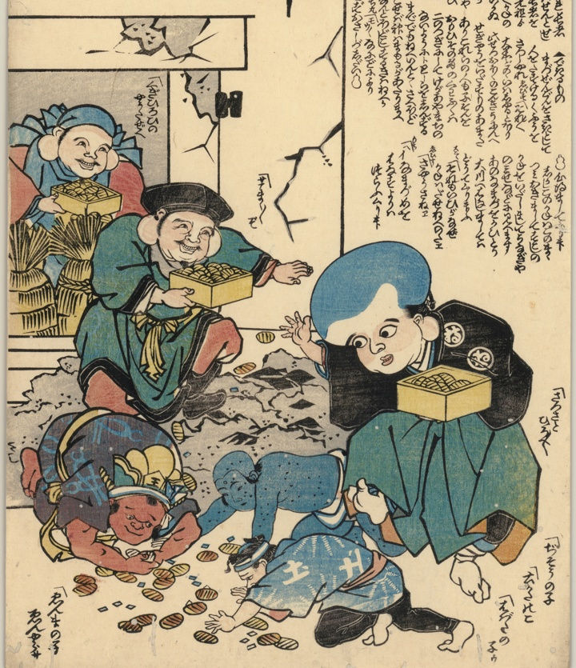

恵比寿と大黒が崩れた家蔵から小判を持ち運び、福助は地面に小判をばらまいている。それを閻魔の子や地蔵の子が拾っている。
著作者：不明／出典：親書誌：U426_nichibunken_0459：[福助・恵比寿・大黒・閻魔の子福神長者を諭す]；フクスケエビスダイコクエンマノコフクジンチョウジャヲサトス／日付：2025／資源識別子：U426_nichibunken_0459_0001_0000
Copyright (c)2010- International Research Center for Japanese Studies, Kyoto, Japan. All rights reserved.